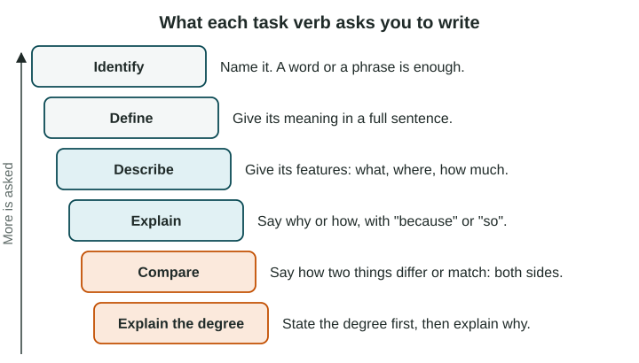

How FRQs Are Scored and What Each Task Verb Demands
Free-response answers are scored part by part, one point each, against one rubric line.
Part 1 · Hook
Why this matters
Part 2 · Prerequisite check
Quick check before you start
1. A map of one country is shaded by province. What is the scale of analysis of its data?
- Local (subnational)
- National
- Global
- Regional
Show the answer
Each value is for a province, a part of the country, so the data are local (subnational).
- Correct: Local (subnational):
- National:
- Global:
- Regional:
2. Which sentence describes a trend?
- River Town grew from about 20,000 to about 50,000 people between 1990 and 2020
- River Town is a town
- River Town has a river
- River Town is in the data
Show the answer
A trend gives a direction, dates and the size of the change.
- Correct: River Town grew from about 20,000 to about 50,000 people between 1990 and 2020:
- River Town is a town:
- River Town has a river:
- River Town is in the data:
Part 3 · See it
See it first

Part 4 · Step by step
How it works, step by step
- Each part has one task verbthe verb tells you exactly what the answer must do
- Each part is scored against one rubric linean answer earns the point only if it does what that line checks
- An answer names a fact but skips the link the verb asks forit earns nothing, even if the fact is right
Part 5 · Key ideas
Key ideas
- The exam has three free-response questions, each with seven parts (A to G) worth 1 point each: Question 1 has no stimulus, Question 2 has one and Question 3 has two.
- A task verb is the word that says what to do: identify, define, describe, explain, compare or explain the degree.
- A rubric is the scoring guide readers use. Each part has one point and one line saying what earns it.
- Explain needs a link word (because, so). Compare speaks of both sides. Explain the degree states the degree first.
Part 6 · Misconception
A common mistake
The wrong idea: If my answer has the right fact, I get the point.
What actually happens: You get the point only if the answer does what the verb asks. A right fact with no link earns nothing on an explain part.
Part 7 · Check yourself
Check yourself
Exam-style questions. Anything you miss goes into your review queue.
Text
A practice part and one student's answer (written for practice, LevlPrep 2026)
Part C (1 point). Explain one reason why many people in rural Country A move to its capital city.
Student answer: "Jobs."
1. Would this answer earn the point for Part C?
- No: it names a reason but does not say how jobs in the capital lead people to move
- Yes: "jobs" is a correct reason, and a correct reason earns the point whatever the verb asks
- No: the answer needs a number from a data source
- Yes: short answers are scored higher because they are clear
Show the answer
An explain answer needs a cause, a link word (because, so) and an effect tied to the place asked about.
- Correct: No: it names a reason but does not say how jobs in the capital lead people to move: Right: "explain" asks for the how or why. "Jobs" names a factor; the link to moving is missing.
- Yes: "jobs" is a correct reason, and a correct reason earns the point whatever the verb asks: A correct name earns an identify point. An explain needs the link: why jobs make people move.
- No: the answer needs a number from a data source: This part has no stimulus and asks for no number; it asks for a reason with its link.
- Yes: short answers are scored higher because they are clear: Readers score what the verb demands, not the length. Here the verb demands a link that is missing.
2. Which rewrite of the student's answer would earn the point?
- "Jobs are a very important reason why people move to the capital city of Country A."
- "The capital has more paid jobs than rural areas, so people move there to earn higher wages."
- "There are jobs in the capital city of Country A, and there are also schools and hospitals there."
- "Rural people in Country A move to the capital city, which is a large and busy city."
Show the answer
A full explain answer has every link: more paid jobs in the capital, so people move there to earn higher wages.
- "Jobs are a very important reason why people move to the capital city of Country A.": This says jobs matter but never says how they cause people to move.
- Correct: "The capital has more paid jobs than rural areas, so people move there to earn higher wages.": Right: it gives the cause (more paid jobs), the link (so) and the effect (people move to earn more).
- "There are jobs in the capital city of Country A, and there are also schools and hospitals there.": This lists more factors but links none of them to moving.
- "Rural people in Country A move to the capital city, which is a large and busy city.": This restates the question and adds a description; restating earns nothing.
3. Which task verb would the student's one-word answer, "Jobs", fully satisfy?
- Explain
- Describe
- Identify
- Compare
Show the answer
Identify is the only verb a single word can satisfy. Every other verb asks for more.
- Explain: Explain asks for the how or why, which a single word does not give.
- Describe: Describe asks for features: what it is like, where and how much.
- Correct: Identify: Right: identify asks you to name the thing; a word or phrase is enough.
- Compare: Compare asks about two things and needs both sides.
4. Which task verb asks you to speak about both of two things?
- Describe
- Identify
- Compare
- Define
Show the answer
Compare needs both sides: "A is ..., whereas B is ...".
- Describe: Describe gives the features of one thing or pattern.
- Identify: Identify names one thing.
- Correct: Compare: Right: a compare answer says how two things are alike or different, and speaks of both.
- Define: Define gives the meaning of one term.
5. A part asks: "Describe the pattern of farming shown on the map." Which answer earns the point?
- "The farms are spread out in some places and close together in others on this map."
- "Farming is important to Country A because many people there work on farms and sell crops in nearby towns."
- "Farms are found in Country A, as the map shows."
- "Most farms are along the river in the south of Country A, and few are in the dry hills of the north."
Show the answer
A describe answer for a pattern says where, what and how much, with named places.
- "The farms are spread out in some places and close together in others on this map.": This names no place, so it does not describe a pattern a reader can check.
- "Farming is important to Country A because many people there work on farms and sell crops in nearby towns.": This gives a reason (an explain) instead of the pattern (a describe), and names no place.
- "Farms are found in Country A, as the map shows.": This says farms exist but gives no where, what or how much, so it does not describe a pattern.
- Correct: "Most farms are along the river in the south of Country A, and few are in the dry hills of the north.": Right: it says where (along the river, in the south), what (most farms) and the contrast with the north.
6. Each free-response question on the AP® Human Geography exam has parts A to G. How are the parts scored?
- Each part is worth 1 point, judged against one rubric line
- Each part is worth up to 3 points for longer answers
- The whole question is scored once, for overall quality
- Points go to answers that use the most key terms
Show the answer
Seven one-point parts, each checked against one rubric line: do exactly what each verb asks.
- Correct: Each part is worth 1 point, judged against one rubric line: Right: seven parts, one point each, so each question is worth 7 points.
- Each part is worth up to 3 points for longer answers: Writing more does not earn more points; each part has one point.
- The whole question is scored once, for overall quality: Readers score part by part, so a strong Part A cannot make up for a missing Part B.
- Points go to answers that use the most key terms: Terms help only when they do what the verb asks; listing terms earns nothing.
Part 8 · Summary
Summary
Part 9 · Up next
What comes next
Part 10 · Connections